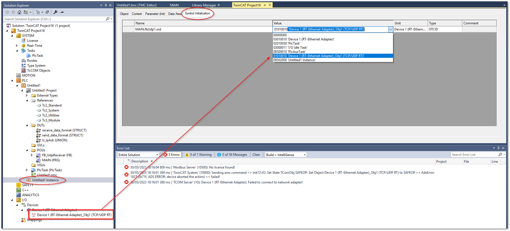

UDPクライアントの実装#
この節ではTwinCAT側がUDPのクライアントソフト実装方法について説明します。下記のサイトで紹介されているサンプルコードをベースとしています。“Downloading the sample.” からダウンロードしてください。
https://infosys.beckhoff.com/content/1033/tf6311_tc3_tcpudp/1077365387.html?id=5050344951114154524
ただ、本節の説明では、このサンプルからではなく、空のPLCプロジェクトから実装する方法について説明しています。ただし、上記オリジナルサンプルコード中の FB_UdpReceiver ファンクションブロックについては以下の変更点のみを掲載しており、全てのコードは掲載していません。
ReceiveDataメソッドの変更
サンプルコードはEchoサーバとしての機能実装のため、受信データハンドラであるこのReceiveDataメソッドが実行されますと、受信データをオウム返しで同じデータを送信元に返すプログラムとなっています。これを、プロパティで与えた構造体
receive_data_formatの変数に対して書き込むだけのメソッドと、受信イベントreceive_completeを上げる処理を行うように改造します。SendDataメソッドの追加
サンプルコードは、Echoサーバのため、外部から任意のデータを送信するメソッドが提供されていません。このため、送信先のIPアドレス、ポート、および、送信データの構造体変数へのポインタをセットすることで、任意の宛先に任意のデータを送ることができるメソッドを追加します。
上記を踏まえ、順に実装方法を説明します。
External Typesの追加#
External Typesメニューを右クリックし、Pin Global Data Typeを選択して現われたInput Assistantウィンドウから次のInterfaces>General以下にある次の3つのインターフェースをインストールITcIoUdpProtocol
ITcIoUdpProtocolRecv
ITComObjectServer
Datatypes>General以下にある次の2つの型をインストールHRESULT
OTCID
{kind=link}
{kind=link}
Tc2_Utilities ライブラリの追加#
T_Arg型を使うためにこのライブラリをインストールする必要があります。
{kind=link}
{kind=link}
構造体の登録#
DUTs以下に次の構造体を定義します。
送受信データ構造体
送信データを格納するための構造体と、デモサーバからの応答データを格納する構造体をそれぞれ定義します。いずれも pack_modeを0に設定し、メモリ上の配置をバイト単位に切り詰めた（バイトストリームデータのまま）データ形式として定義します。
{attribute 'pack_mode' := '0'} TYPE send_data_format : STRUCT command : STRING(4); seq_number : UINT; value : ULINT; END_STRUCT END_TYPE
{attribute 'pack_mode' := '0'} TYPE receive_data_format : STRUCT command : STRING(4); seq_number : UINT; value : REAL; END_STRUCT END_TYPE
STRING型について
STRING型で任意のサイズを指定する場合、実際メモリ上に確保されるサイズは、1Byte多いものとなり、末尾には自動的にNULL文字が付加されます。この例では、4ByteのサイズのSTRING型の変数が定義されておりますが、実際は5Byteのエリアが確保されます。
pack modeについて
TwinCAT上では、構造体データをメモリ上に配置するとき、CPU演算におけるメモリアクセス効率を優先する方法と、メモリサイズの効率を優先方法のいずれかを選ぶ事ができます。このパターンはpack_modeと呼ばれるattributeで指定できます。詳しくは下記をご覧ください。 https://infosys.beckhoff.com/content/1033/tc3_plc_intro/2529746059.html?id=3686945105176987925
IPアドレス設定用共用体を登録
IPアドレスをバイト型の整数の配列で指定するとDUINTでアクセスできるように、次の通り共用体を定義します。
TYPE U_IpAdr : UNION ipAdrInternal : UDINT; ipAdr : ARRAY[0..3] OF BYTE; END_UNION END_TYPE
プログラム実装#
FB_UdpReceiver ファンクションブロックの改造#
InfoSysサイトのオリジナルサンプルコードからダウンロードしたTwinCATプロジェクトを開いて、FB_UdpReceiver 全体を編集中のPLCプロジェクトのPOUsへコピーします。この上で以下の変更を行ってください。
出力変数の追加
受信イベント、および、受信データのジェネリクス型変数を出力変数として登録します。
VAR_OUTPUT receive_complete :BOOL; receive_data :T_Arg; END_VAR
ReceiveDataメソッドの変更
変数宣言部は変更無しで、プログラム部を以下のとおり変更する。
nReceivedPakets := nReceivedPakets+1; uLastReceivedIP.ipAdrInternal := ipAddr; IF ipUdp <> 0 THEN hrSend := ipUdp.SendData(ipAddr, udpSrcPort, udpDestPort, nData, pData, TRUE, 0); // send data back END_IF
nReceivedPakets := nReceivedPakets+1; uLastReceivedIP.ipAdrInternal := ipAddr; IF ipUdp <> 0 THEN receive_data.cbLen := nData; receive_data.pData := pData; receive_complete := TRUE; END_IF
SendDataメソッドの追加
以下のメソッドを追加します。
METHOD PUBLIC SendData : HRESULT VAR_INPUT dest : ARRAY [0..3] OF BYTE; nTargetPort : UINT; data : T_ARG; END_VAR VAR uTargetHostIP : U_IpAdr; END_VAR
uTargetHostIP.ipAdr := dest; hrSend := ipUdp.SendData(uTargetHostIP.ipAdrInternal, nTargetPort, nUdpPort, data.cbLen, data.pData, TRUE, 0); // send data back
ListenPort プロパティの追加
待ち受けポートを設定する
ListenPortプロパティを追加します。POUsの下のFB_UdpReceiver右クリックして現われたメニューから、Add>Property...を選択し、次図のとおり設定します。作成された
ListenPortのSetのプログラム部に以下のとおり記述します。nUdpPort := ListenPort;
{kind=link}
MAINプログラムの実装#
Pythonで実装したサーバが稼動するホストアドレスは、192.168.2.2 として掲載しています。
PROGRAM MAIN
VAR
fbUdp1 : FB_UdpReceiver;
send_data : send_data_format; // Send message variables
receive_data : receive_data_format; // Receive message variables
target_host : ARRAY [0..3] OF BYTE := [2, 2, 168, 192]; // IP Address of server
target_port : UINT := 9998; // Port number of server listening
cycle_count : UINT;
END_VAR
// Set listen port
fbUdp1.ListenPort := 9999;
// Prepare send data
send_data.command := 'SCOM';
send_data.seq_number := cycle_count;
send_data.value := 16#FFFFFFFFFFFFFFFF;
IF cycle_count > 65535 THEN
cycle_count := 0;
ELSE
cycle_count := cycle_count + 1;
END_IF
// Send request command
fbUdp1.SendData(
dest := target_host,
nTargetPort := target_port,
data := F_BIGTYPE(pData := ADR(send_data), cbLen := SIZEOF(send_data))
);
fbUdp1();
// Get received data to "receive_data" when data received.
IF fbUdp1.receive_complete THEN
Tc2_System.MEMCPY(ADR(receive_data), fbUdp1.receive_data.pData, fbUdp1.receive_data.cbLen);
END_IF
ビルドとPLCインスタンス設定#
PLCプロジェクトのビルドを行うと、PLCのインスタンスに Symbol Initialization タブが出現します。次図のとおりPLCの通信インターフェースをUDPリアルタイムアダプタオブジェクトに紐づけてください。
